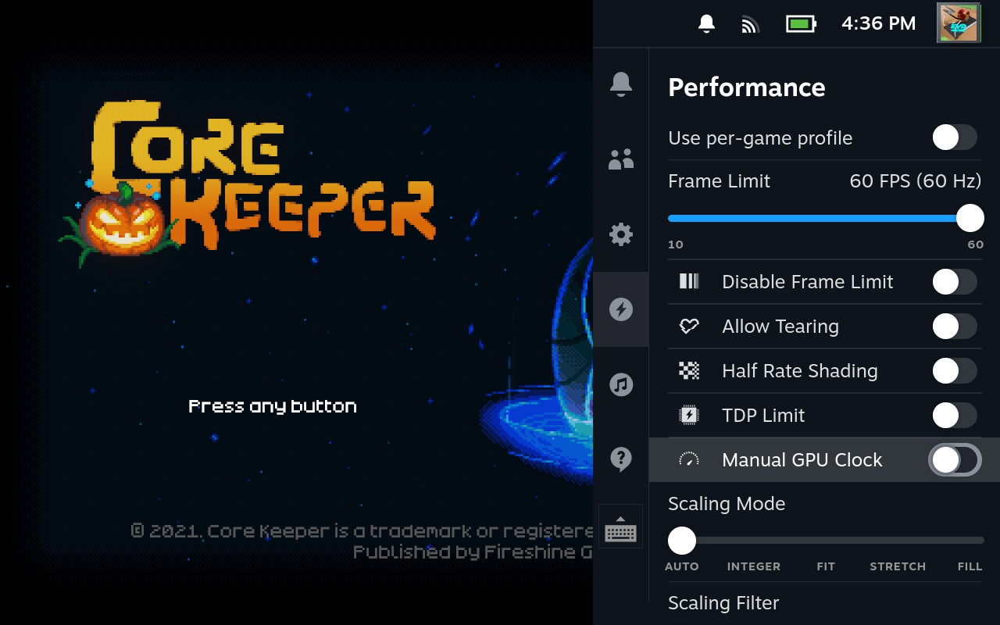

10. Quick Access Menu
Selecting the "Quick Access" menu while in game allows you to do several things:- The "Notifications" tab allows you to view any notifications you have
- The "Friends" tab allows you to view your Friends List activity
- To learn more about the Friendslist, see Section 6, "Friends and Chatting"
- The "Settings" tab allows you to adjust brightness, audio, and others as shown below:
- The "Performance" tab allows you to see the current battery level as well as estimated time before running out of battery:
- The "Performance Overlay Level" within this menu allows you to change the overlay on your screen with several data points:
- FPS (Frames Per Second)
- How long the Steam Deck has been running
- GPU power usage and temperature
- CPU power usage and temperature
- RAM Usage
- Network usage
- Fan Speed
- And other helpful information
- The "Advanced View" within the "Performance" tab allows you to limit your FPS as well as several other options meant to improve your performance: 
- You can adjust these advanced performance options for one game or for your whole system
Note:
Note: